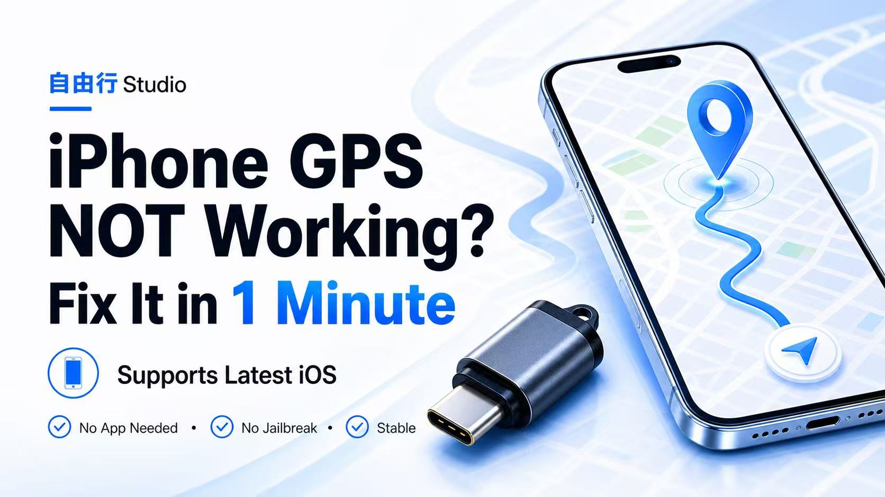

适合微信、钉钉、企业微信、水印相机、抖音、小红书等基于 GPS 坐标的场景。先确认机型、系统、App 版本和校验规则，再给远程配置建议。

需要把 iPhone 的 GPS 坐标定位修改到指定城市/地点，用于定位测试、外勤/打卡场景、LBS 功能测试等（不是改 IP）。
| 适用机型 | iPhone 6 → iPhone 17 Pro Max |
|---|---|
| 系统兼容 | iOS 12 – iOS 26.4 |
| 典型场景 | 企业微信 / 钉钉 / 微信 / 抖音 / 小红书 / Facebook / Instagram / 地图等 |
| 适用 | 主要依赖 GPS/坐标定位的 App 打卡、外勤、拍照水印 地图、运动轨迹、LBS 测试 |
|---|---|
| 不适用 | 只看 IP、运营商、账号风控、设备环境来判断地区的场景 这类不是本设备可解决范围 |
结论：本设备修改的是 GPS 坐标定位，不是改 IP。
通过「创建分身 App」实现分身内定位修改，修改的是 GPS 坐标，只对分身生效。
| 适用 | 主要依赖 GPS/坐标定位的场景 打卡、外勤、拍照水印、部分地图导航等 |
|---|---|
| 不适用 | 只看 IP / 运营商 / 账号风控 / 设备环境来判断地区的场景 这类不是本方案可解决范围 |
特别适配：今日水印相机、施工现场服务
其它适配（部分示例）：钉钉 · 企业微信 · 今日水印相机 · 外勤365 · 纷享销客CRM · 云之家 · 勤策 · 超感动 · 移动办公m3 · 决策易 · 普服监督 · 吉意宝 · 新时代销售 · 贝壳 · 电中在线 · 移动彩云 · i人事 · i通微 · E-Mobile7 · 精准扶贫 · 门店管家 · 学驾考一件事 · 恒大促销管理 · 福家e站 · 十分到家 · 邮政员工自助 · TransferWise · 海销通 · 红圈CRM · 格力云派工 · 得力e+ · 金红叶sfa · 五征crm · 江西执业药师 · 太平慧眼 · 蓝月亮sfa · 开源相机 · 汇商云crm · 十荟团app · 海尔员工版
分身打不开或闪退怎么办？
定位不生效怎么办？
| 类别 | 办公协同 |
|---|---|
| 示例 | 企业微信（WeCom） · 钉钉（DingTalk） |
| 社交与内容 | 微信 · 抖音 · 小红书 · Facebook · Instagram |
| 地图导航（国内） | 高德地图（Amap） |
| 地图导航（国外） | Apple Maps · Google Maps |
| 其他 | 其他基于 GPS 的应用 |
本内容仅用于学习测试与技术交流，请勿用于任何违法违规用途。
把设备型号、系统版本、目标 App、报错截图、你想达到的效果一起发过来。我会先判断，再告诉你下一步。
+1 415 425 1293
yes1974g
zhang7903023@gmail.com